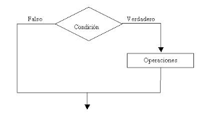
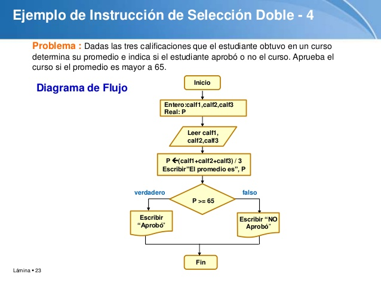
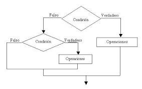
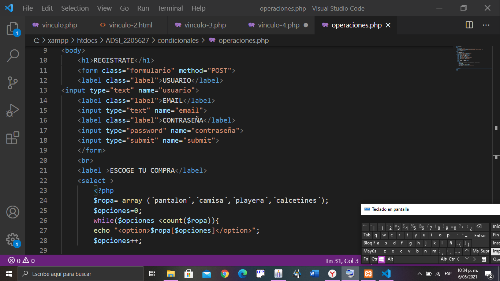

BIENVENIDO A LOS CONDICIONALES
Las estructuras condicionales comparan una variable contra otro(s) valor(es),
para que, en base al resultado de esta comparación, se siga un curso de acción
dentro del programa. Cabe mencionar que la comparación se puede hacer contra
otra variable o contra una constante, según se necesite.
Las instrucciones condicionales pueden ser:
CONDICIONALES SIMPLE
Los algoritmos condicionales simples, son aquellos que solo tienen una condición.

Ejemplo:
Diseñar un algoritmo que dada la edad de una persona indique si es MAYOR o
MENOR de edad.
CONDICIONALES DOBLES
Los algoritmos condicionales dobles, son aquellos tienen mas de una operación
dentro de la condición.

CONDICIONALES ANIDADAS
Los algoritmos condicionales anidados, son aquellos tienen mas de una
condición dentro de su desarrollo y una condición esta dentro de otra.
Ejemplo:
Diseñe un algoritmo que dado dos números A y B, determine si A es mayor,
igual o menor a B.

Ejercicios

Opcion 1 Opcion 2 Opcion 3
Opcion 4